Lab 1
Exercises
arbuthnot$girlsIt looks like there’s a generally upwards trend.
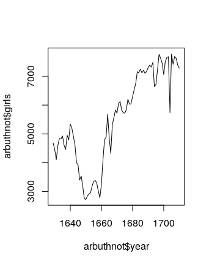
We generate the plot using the following command.
The result is the following. It looks like it fluctuates a lot, but always stays solidly above 0.5.
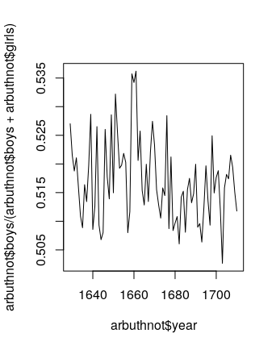
On Your Own
- The data is from years 1940-2002. There are 63 rows and 3 columns; the column names are “year,” “boys,” and “girls.”
- The data is on a similar scale: Arbuthnot’s data ran for 82 years, while this data runs for 63.
There’s a generally decreasing trend in the ratio, but it stays above 1.
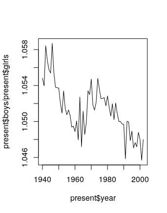
The largest number of total births happened in 1961.
To figure this out in R, we note that
returns the index of the largest entry of the vector
present$boys + present$girls, which happens to be 22. Then, runningthen returns the entry in row 22 and column 1 (ie, the year corresponding to index 22), which happens to be 1961.
We can also put all of this together; the command
returns the answer 1961 in just one line.
Lab 2
Exercises
There are 20000 cases and 9 variables.
genhlthis categorical (ordinal),exerany,hlthplan,smoke100, andgenderare categorical (non-ordinal),height,weight, andwtdesireare numerical (continuous), and finally,ageis numerical (discrete).For
heightandage, we get the following numerical summaries, and the interquartile ranges are 6 and 26, respectively.> summary(cdc$height) Min. 1st Qu. Median Mean 3rd Qu. Max. 48.00 64.00 67.00 67.18 70.00 93.00 > summary(cdc$age) Min. 1st Qu. Median Mean 3rd Qu. Max. 18.00 31.00 43.00 45.07 57.00 99.00For
genderandexerany, we have the following relative frequency distributions.There are 9569 males in the sample, and 23.285% of the sample population reports being in excellent health.
The mosaic plot (below) shows that relatively more men report having smoked 100 cigarettes than women.
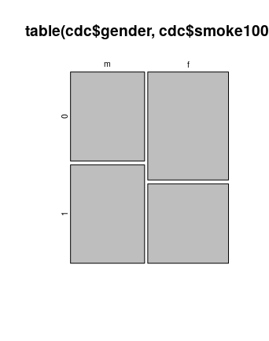
under23_and_smoke <- subset(cdc, age < 23 & smoke100 == "1")The box plot of
genhlthagainstbmishows that decreasing health appears to coincide with higher BMIs.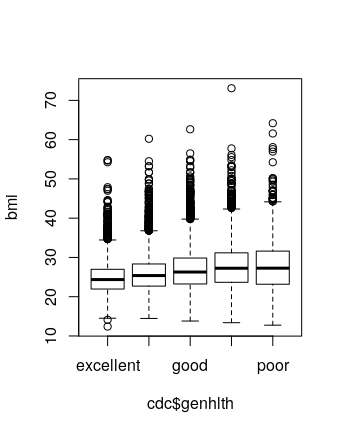
Here is a box plot of
hlthplanagainstbmi. It appears that having a health plan is correlated with fewer extreme BMIs.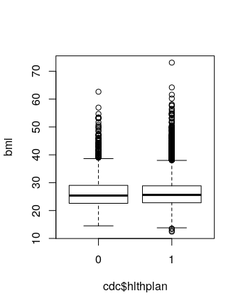
On Your Own
The scatterplot shows a generally positive trend, but the slope appears to be less than 1.
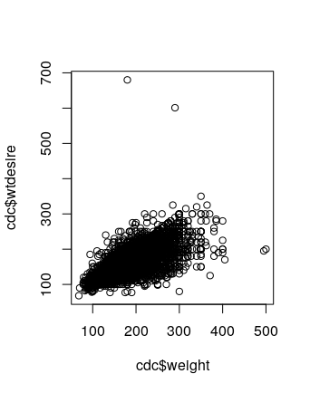
wdiff <- cdc$weight - cdc$wtdesire(but could do it the other way around too, which will affect answers below).wdiffis a vector of continuous numerical observations. An entry of 0 means that person is at their desired weight. An positive entry indicates the person wants to lose weight, and a negative entry indicates they want to gain weight.Running
hist(wdiff,breaks=50)andboxplot(wdiff)yield the following plots.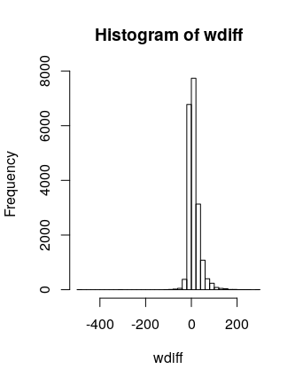
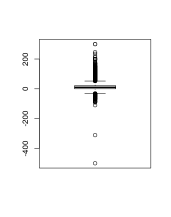
It appears that most people are happy with their weights, but there is more of a skew towards the positive side (ie, more people want to lose weight than gain).
Here are numerical summaries.
> cdc$wdiff <- wdiff > male <- subset(cdc, gender=="m") > female <- subset(cdc, gender=="f") > summary(male$wdiff) Min. 1st Qu. Median Mean 3rd Qu. Max. -500.00 0.00 5.00 10.71 20.00 300.00 > summary(female$wdiff) Min. 1st Qu. Median Mean 3rd Qu. Max. -83.00 0.00 10.00 18.15 27.00 300.00And here is a side-by-side box plot.
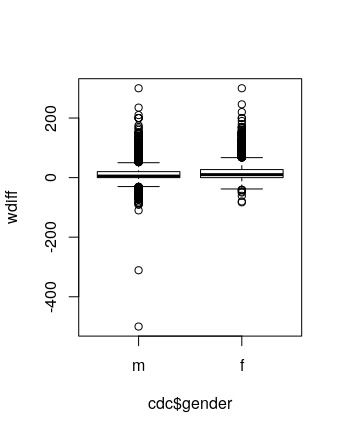
It appears that women generally want to lose more weight (comparing mean and/or medians).
It appears that 70.76% of the weights are within one standard deviation of the mean.
Lab 3
Exercises
There is always exactly one miss in any streak. A streak of 1 has one hit and one miss. A streak of 0 has just one miss.
There are fewer and fewer longer streaks. The longest streak was 4, though the most frequent was 0.
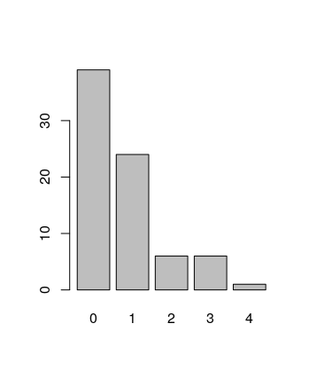
21 heads, 79 tails
sim_basket = sample(outcomes, size = 133, replace = TRUE, prob = c(0.45, 0.55))
On Your Own
There are fewer and fewer longer streaks. The longest streak was 7, but the most frequent was 0.
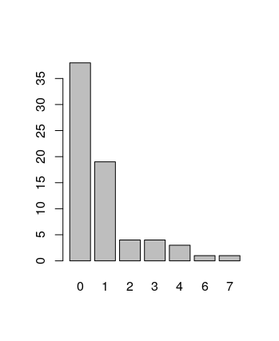
If we run the simulation again, the distribution should be similar, but not necessarily identical. Sometimes the longest streak is 4, sometimes it gets as long as 10, but it’s never terribly different.
This simulation does not give evidence that Kobe has “hot hands.” All of the simulations I ran were either similar to Kobe’s distribution, or had longer streaks.
Lab 4
Exercises
Here are the distributions, overlaid one on top of the other using
ggplot(bdims, aes(x=hgt, color=sex)) + geom_histogram(fill="white", alpha=0.5, position="identity").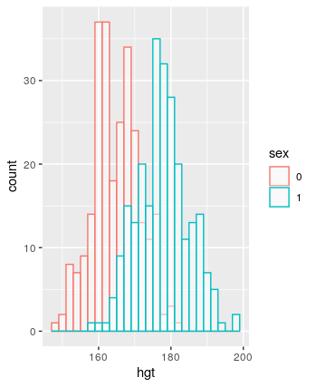
Women tend to be less tall. But both distributions are roughly normal.
It does appear roughly normal.
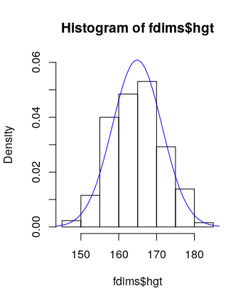
The Q-Q plot of the simulated data looks an awful lot like the Q-Q plot of the real data.
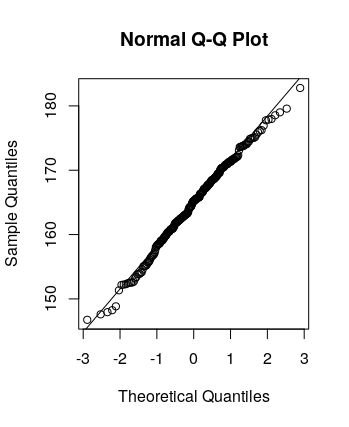
The plots do provide evidence that female heights are nearly normal.
Female weights seem less normally distributed.
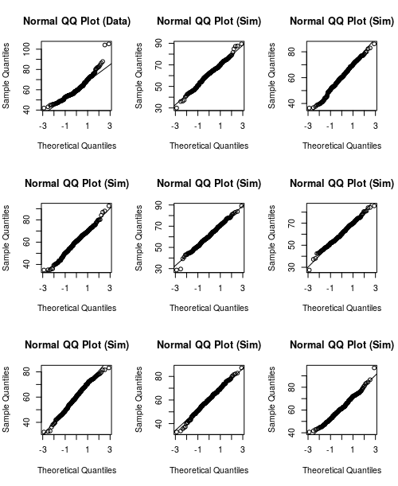
What is the probability that female heights are less than 178? The normal distribution says 97.8%, the actual data says 98.1%.
What is the probability that female weights are less than 61? The normal distribution says 51.7%, the actual data says 59.2%.
The answer for the height distribution is much closer.
On Your Own
- B, C, D, A
- It probably has to do with the discreteness of the data.
The Q-Q plot and the histogram are displayed below. In the Q-Q plot, the data lies above the line. This means that sample quantiles are above theoretical quantiles, which means that at any given point, we’ve seen more data than we would expect if the distribution was normally distributed. This means that the mass of the distribution is further to the left, so the distribution should be right skewed. This is confirmed by the histogram.
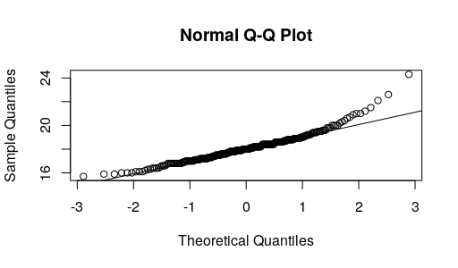
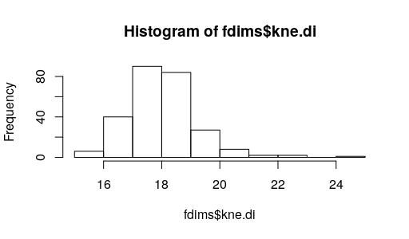
Lab 5A
Exercises
The distribution is slightly right skewed. The mean, at 1500, is slightly higher than the median, at 1442.
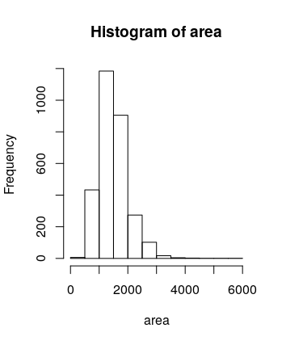
samp1has a less bell-curved-looking distribution, though it is still right skewed. The mean is 1486.42.samp2had a mean of 1418.44, which was less than the mean ofsamp1. If we took a larger sample, the sample mean should be closer to the true mean.There are 5000 elements. The distribution is roughly normal, centered at 1500. If we took 50000 means, the distribution should still look roughly normal centered at 1500.
There are 100 elements. Each is a mean of a sample of 50 areas.
> sample_means_small [1] 1636.96 1512.40 1400.68 1539.86 1584.10 1513.30 [7] 1488.74 1395.66 1524.02 1537.40 1520.12 1479.32 [13] 1385.42 1502.90 1532.00 1510.06 1542.00 1429.46 [19] 1361.28 1577.32 1496.66 1592.52 1464.08 1580.18 [25] 1689.26 1403.20 1473.34 1465.64 1389.28 1464.44 [31] 1560.10 1611.22 1551.54 1393.10 1616.98 1554.44 [37] 1494.38 1368.18 1508.28 1492.74 1453.42 1406.52 [43] 1525.18 1561.12 1408.74 1468.86 1403.62 1471.80 [49] 1524.42 1565.74 1524.10 1514.20 1556.24 1509.26 [55] 1509.12 1501.52 1595.48 1437.08 1483.24 1581.10 [61] 1613.56 1527.60 1466.04 1548.70 1548.04 1539.76 [67] 1524.82 1532.24 1487.40 1498.16 1343.76 1566.02 [73] 1622.50 1438.38 1475.00 1514.18 1521.56 1581.84 [79] 1492.78 1443.68 1467.14 1482.70 1572.48 1450.32 [85] 1564.26 1462.30 1595.52 1645.76 1526.34 1513.40 [91] 1575.64 1511.74 1451.78 1528.62 1525.22 1454.78 [97] 1423.96 1572.24 1451.92 1566.10When the sample size is larger, the variability decreases.
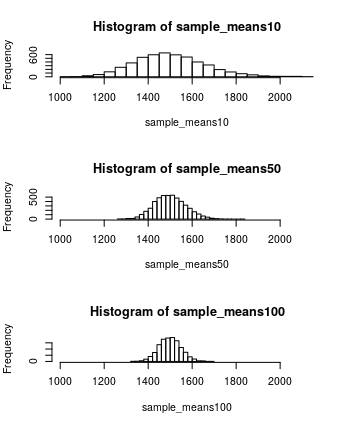
On Your Own
Running
mean(sample(price, 50))yields 169726.3.Here is the distribution. It is normal, with mean 181027. The true mean is 180796.1.
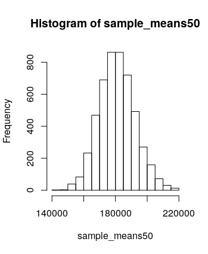
Here is the distribution for
sample_means150. It is also normal, with mean 180649. This is closer to the true mean.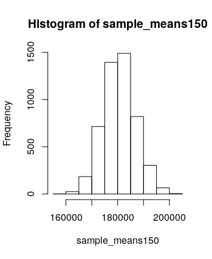
sample_means150has a narrower distribution. If we want to be more confident about our estimate, we should use a distribution with a narrower distribution (ie, we should take larger sample sizes).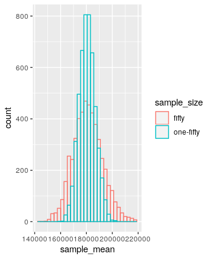
To generate this plot, I ran the following.
Lab 5B
Exercises
The distribution is right skewed. If ``typical’’ size means mean, then the mean is 1445.53, though perhaps the median is a better estimate since the data is skewed. The median is 1407.
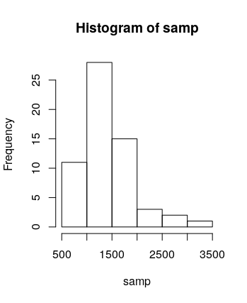
It should be similar, but not identical. Different people will have different samples of 60.
The observations need to be independent and the sample size needs to be at least 30 (cf. section 7.1).
“95% confidence interval” means that, 95% of the time, this interval will contain the true mean.
Yes, my confidence interval does contain the true mean.
One would expect that 95% of confidence intervals constructed in this way will contain the true mean.
On Your Own
47/50 contain the true mean, which is about 94%.
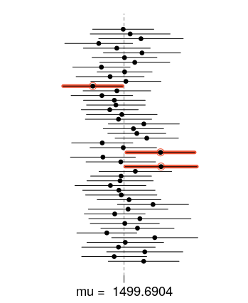
The critical value for 50% confidence interval is calculated by
abs(qnorm(0.25)), which yields 0.674. (Note:qnorm(0.25)tells me the value below which 25% of the data lies under a standard normal distribution.)Constructing 50% confidence intervals (which are much narrower than 95% confidence intervals), 22 of them do not contain the true mean. Thus 27/50 = 54% of them do, which is pretty close.
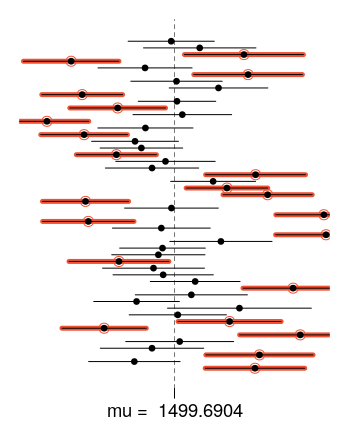
Lab 6
Exercises
Sample statistics (they certainly didn’t talk to everyone in the world!).
The study needs to have been a simple random sample. It’s fairly unlikely that this is the case. A large portion of the global population is not easy to communicate with (living remotely, lack of access to communications technology, etc).
Each row in Table 6 corresponds to a country. Each row in
atheistcorresponds to a person.Running
table(us12$response)shows that 50 out of 1002 US respondents reported being an atheist. 50/1002 = 0.0499002, which is basically 5% up to minor rounding.We need the sample to be independent: as noted earlier, this is a bit unlikely. We also need the sample size to be large enough that the success-failure condition is satisfied. The success-failure condition requires checking that \(1002 \cdot 0.05\) and \(1002 \cdot 0.95\) are both bigger than 10, which is true.
R outputs a standard error of 0.007, so the margin of error is about 0.014. The 95% confidence interval is (0.0364 , 0.0634).
In India, 33 out of 1092 respondents reported being atheist, which is about 3%. The success-failure condition is satisfied (because both the atheist and non-atheist numbers are larger than 10), but it’s likely that the sample isn’t that great. The 95% confidence interval is (0.0201 , 0.0404), and the margin of error is about 0.0102.
In Japan, 372 out of 1212 respondents reported being atheist. Same comments about applicability of confidence interval methods. The 95% confidence interval is (0.281 , 0.3329), which has margin of error about 0.0259.
The graph is shaped like the top half of an ellipse.
The distribution is roughly normal, with mean at 0.09969.
The plots are displayed below. Increasing \(n\) seems to make the plot narrower. Changing \(p\) seems to move the center of the plot. All four are roughly normal, except for the very last one which is a little cut off towards the bottom, making it right skewed.
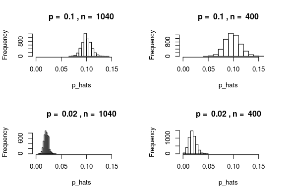
It is probably not a good idea to proceed with inference on Ecuador’s data, since the sampling distribution is likely not normal.
On Your Own
For Spain, the success-failure condition is satisfied, though I have the same concerns about randomness of the sample that I’ve mentioned above. The 2005 confidence interval is (0.083 , 0.1177), and the 2012 confidence interval is (0.0734 , 0.1065). These overlap,so we do not have convincing evidence of chance.
In the US, the intervals are (0.0038 , 0.0161) and (0.0364, 0.0634), which do not overlap. This does provide some evidence of change.
We’d expect to detect a change in 5% of the countries in which there has been no change.
The point here is just to look at the inequality \[2 \sqrt{\frac{p(1-p)}{n}} \leq 0.01\] and solve it for \(n\). Simplifying this gives \(n \geq 40000p(1-p)\). The largest possible value of \(p(1-p)\) happens when \(p = 0.5\). When \(p = 0.5\), we have \(40000p(1-p) = 10000\). So we should sample at least 10000 people.
Lab 7
Exercises
Each case (or observation) is a birth. There are 1000 cases.
The side-by-side box plot is displayed below. It seems that babies born from mothers who smoke tend to weigh less, though there are more outlying weights on both ends for women who don’t smoke.
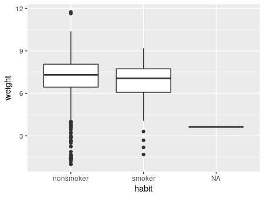
Each group has more than 30 observations (one has 126, the other has 873), so conditions for inference should be satisfied.
Let \(\mu_1\) be the average weight of babies born to mothers who don’t smoke, and \(\mu_2\) the average weight of babies born to mothers who do smoke. Then \(H_0\) is the statement that \(\mu_1 - \mu_2 = 0\), while \(H_A\) is the statement that \(\mu_a - \mu_2 \neq 0\).
The confidence interval is (0.05, 0.58). Since 0 is not contained in this interval, there does appear to be a statistically significant difference in birth weights for the two groups.
On Your Own
The 95% confidence interval is (38.15, 38.52).
The 90% confidence interval is (38.18, 38.49).
The t-value is 1.38 with 175.45 degrees of freedom, and p-value 0.169. This is not sufficient evidence to reject the null hypothesis that the average weight gained by the two groups is the same.
It seems that mothers 34 and under are classified as “younger” while those 35 and older are “mature.”
Let \(\mu_1\) be the average weight of babies born to younger moms and \(\mu_2\) the average weight born to mature moms. Let \(H_0\) be the hypothesis that these means are the same, and \(H_A\) that they are different. A boxplot of the distributions is displayed below. Running a t-test gives us a p-value of 0.85, so we fail to reject the hypothesis that these two means are different.
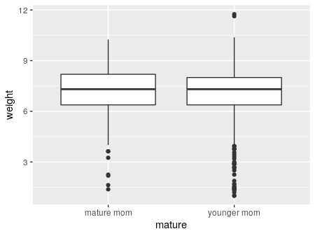
Lab 8
Exercises
We’d use a scatterplot. It’s not a great linear relationship, but does look generally positive.
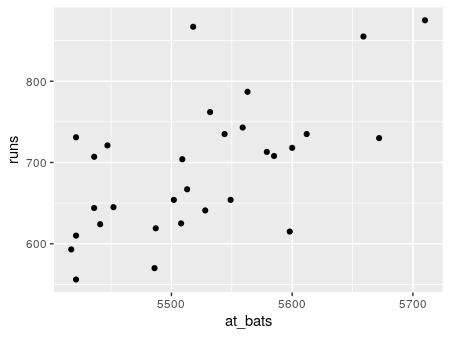
See above.
132185.4.
The equation is \(y = 1.83x + 415.24\).
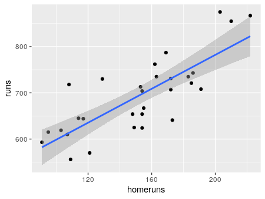
(Maybe this problem wanted 5579
at_bats…?) The model would predict 728.32. The actual runs were 713, so the model overestimates. The residual is -15.32.There’s not a clear pattern in the residuals.
The residuals are normalish, but the fit is not great.
The variability seems close to being constant. Perhaps it decreases slightly as
at_batsincreases.
On Your Own
The relationship between
runsandbat_avgseems sort of linear.The \(R^2\) is 0.65, compared to 0.37 for
runsagainstat_bats, so the linear fit is better in this situation.It seems that
bat_avgis the best predictor forruns.> cor(mlb11$runs, mlb11$at_bats)^2 [1] 0.3728654 > cor(mlb11$runs, mlb11$hits)^2 [1] 0.6419388 > cor(mlb11$runs, mlb11$homeruns)^2 [1] 0.6265636 > cor(mlb11$runs, mlb11$bat_avg)^2 [1] 0.6560771 > cor(mlb11$runs, mlb11$strikeouts)^2 [1] 0.1693579 > cor(mlb11$runs, mlb11$stolen_bases)^2 [1] 0.002913993 > cor(mlb11$runs, mlb11$wins)^2 [1] 0.3609712All of them are better. The best seems to be
new_obs.> cor(mlb11$runs, mlb11$new_onbase)^2 [1] 0.8491053 > cor(mlb11$runs, mlb11$new_slug)^2 [1] 0.8968704 > cor(mlb11$runs, mlb11$new_obs)^2 [1] 0.9349271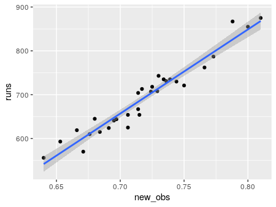
There does appear to be no pattern in the residual plot, and the residuals are at least sort of normal.
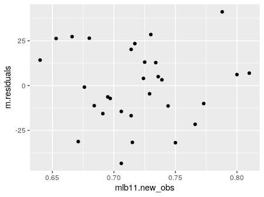
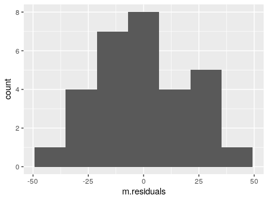